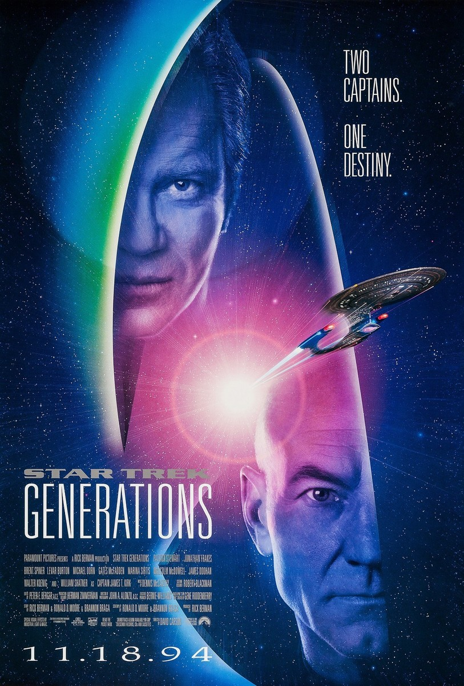

@c6reviews.
@c6reviews.Films
home
| Star Trek Generations | |
|---|---|
|  | |
| Film number: | #7 |
| Release date: | November 18, 1994 |
| In-universe year: | 2293 (opening) 2371 (primary) |
| Universe Timeline Go to full timeline ➡︎ | |||
|---|---|---|---|
| 2292 | |||
| 2293 | Star Trek VI: The Undiscovered Country |
USS Enterprise‑B Launched | ❰❰ Generations (first few scenes) |
| 2294 | |||
| [68 intervening years] | |||
| 2363 | |||
| 2364 | Star Trek The Next Generation (TNG) |
||
| 2365 | |||
| 2366 | |||
| 2367 | |||
| 2368 | |||
| 2369 | Star Trek Deep Space Nine (DS9) |
||
| 2370 | |||
| 2371 | Star Trek Voyager (VOY) |
Generations (majority of the film) |
|
| 2372 | |||
| 2373 | First Contact | ||
| 2374 | |||
| 2375 | Insurrection | ||
| 2376 | |||
| 2377 | |||
| 2378 | |||
| 2379 | Nemesis | ||
| 2380 | Star Trek Lower Decks (LOW) |
||
| 2381 | |||
| 2382 | |||
| 2383 | Star Trek Prodigy (PRO) |
||
| 2384 | |||
| 2385 | |||
| 2386 | |||
Star Trek Generations is the seventh Star Trek film, and it is the first of four films to star the cast of the TV series Star Trek: The Next Generation. It takes place in the year 2371, a short time after the TV series left off. Importantly, this movie brings together Captain Jean-Luc Picard from The Next Generation and Captain James T. Kirk from The Original Series, which took place over 100 years prior. Of course, there is some time-travel tomfoolery that brings the two captains together.
Released in 1994, the film was sometimes labeled as Star Trek VII, especially in some old box sets containing several Trek films, even though that was never officially part of the title. This designation is increasingly rare today.
Without spoiling anything, this film was often reviled for one specific reason that I will discuss later in this article. Because of that, many regarded this first TNG film to be a failure. It was certainly not without its problems, but I don't think every fan (including myself) had the same strong negative feelings that many others did. I'm not saying the reactions were unwarranted – on the contrary, I think fans were right to react the way they did – it's just that the one big misstep did not ruin the entire film for me. I respect what they tried to do.
You can absolutely enjoy this film without having seen any prior Star Trek movies or TV shows – there is no “insider knowledge” that is necessary to understand what is happening. However, you would obviously enjoy the film more if you had some knowledge of the characters and their pasts.
Strict Chronology: This film brings together characters from The Original Series and The Next Generation, and the events take place after both of those shows and the original six films. If you really want to see everything in order, two TV series (three if you include The Animated Series) and six movies is a lot to get through before watching this film. Since the film is largely focused around the cast of The Next Generation, I would say it's more important to have a deeper knowledge of the TNG characters, and maybe not as crucial to have seen every adventure of the original cast.
If you don't want to commit to watching the entire The Next Generation series, you can click that link to view my TNG episode guides. There's a “Must Watch” list if you only want to see the essential episodes and a “Recommended” list if you want to see even more.
Again, it's not strictly necessary to watch anything before enjoying this film, but if you've never seen a single episode of TNG, I recommend watching at least the following four episodes on this suggested prerequisite watch list:
| Suggested Prerequisite Watch List | |||
| Series | Episode | Title | Description / Relevance |
|---|---|---|---|
 |
3x26 & 4x01 | The Best of Both Worlds (Parts I and II) | The plot of “The Best of Both Worlds” is not directly related to Star Trek Generations, but rather than watching something like the series premiere (which was a little rough), this two-part episode will give you a better idea of the TNG crew's dynamics in a much better story. It will also introduce the Enterprise‑D and her capabilities, prepare you for the next movie (Star Trek: First Contact), and it provides important information needed for the next suggested prerequisite episode, “Family”. |
|
4x02 | Family | Introduction of Picard's brother and nephew, Robert and René |
|
4x03 | Brothers | Regarding Data and his emotion chip |
| Additional Related Watching | |||
| Series | Episode | Title | Description / Relevance |
|
4x26 & 5x01 | Redemption (Parts I and II) | Introduction of the Duras sisters, Lursa and B'Etor |
|
6x26 & 7x01 | Descent (Parts I and II) | Regarding how Data re-obtained his emotion chip |
|
7x21 | Firstborn | Last appearance of the Duras sisters |
One-sentence summary: Picard recruits Kirk to help him thwart a madman who wants to get into the Nexus at any cost.
With the final episode of Star Trek: The Next Generation having aired earlier in the year, as well as the final movie featuring the Original Cast having been released three years prior, it absolutely made sense that it was time to bridge the two generations and somehow bring together the legendary Captains Kirk and Picard. We knew there would have to be some sort of time-travel trickery at work here, but the concept of the Nexus was met with mixed reviews. It's a bit too contradictory and magical, even for Trek. A doorway to a place of eternal bliss? But you can't just fly into it with a ship because it will damage the ship? That doesn't seem to actually matter to the several people on damaged ships that were transported to the Nexus anyway, so you can just fly into it with a ship? Everyone is so blissful there but somehow Picard and Kirk's sense of duty allows them to see through the illusion? And they can just leave the Nexus and go wherever and whenever they want? I dunno, it's all a little too contrived.
Here's some vaguely interesting facts about the opening scenes on the Enterprise‑B:
- Leonard Nimoy was asked to return as Spock. When he declined, his lines were given to James Doohan, playing Scotty.
- DeForest Kelley was asked to return as Dr. McCoy. When he declined, his lines were given to Walter Koenig, playing Pavel Chekov. (This explains why Chekov seemingly randomly recruits two reporters to help him provide medical aid to the refugees.)
- George Takei was asked to return as Hikaru Sulu. When he declined, they created a new character – Demora Sulu, Hikaru's daughter, played by Jacqueline Kim – and gave the lines to her.
Now, let's just address the elephant in the room. The thing that ruined this film for many fans was the extremely dissatisfying way that James Kirk died. First and foremost, the film is not about Kirk's death, and it doesn't give it the reverence it deserves. The film is about Picard and the TNG crew, and Kirk's death plays far too minor a part. I have to admit, I had to give my rating on this movie a good, long reconsideration. When I first saw this film, I was... well, 30 years younger than I am now. At that time, I had grown up with the TNG cast. The TOS cast was before my time, and I did not have the same history with them that many long-time fans did. So, to me, Kirk's death wasn't a deal-breaker; I was there to see the TNG cast's first movie. Well, looking back on this now, 30 years later, I really see what a terrible disservice they did in flippantly killing off Kirk how they did.
You have to understand, in this time, James T. Kirk is the face of Star Trek. He is the O.G. Captain. He had been with fans through The Original Series, The Animated Series, and six feature films. To take the star of your show, the representative, the embodiment, the essence, the paragon of Star Trek and discard him with such little regard, with no pomp and circumstance, with no reflection on his accomplishments and contributions to both his in-universe duties as a Starfleet officer and the out-of-universe Star Trek franchise as a whole is... well, it's not just wrong, it's a HUGE oversight and disservice.
- Notably, this is the one and only appearance of the Enterprise NCC‑1701‑B in the entire Star Trek franchise. James Kirk was famously the captain of the Enterprise NCC‑1701 and NCC‑1701‑A in The Original Series, The Animated Series, and the first six Star Trek movies. Jean-Luc Picard was famously the captain of the Enterprise NCC‑1701‑D in The Next Generation. The Enterprise NCC‑1701‑C appeared in a single episode: TNG 3x15: Yesterday's Enterprise.
- The Enterprise‑D crew go back and forth between wearing their original TNG-style uniforms and the newer uniforms seen in the first few seasons of DS9. It suggests that Starfleet was in a transitional phase, or that the uniforms were used for different purposes in different situations. Even Sisko doffs his DS9 uniform in favor of a TNG-style uniform when he visits Earth in DS9 4x11: Homefront. I only mention this because it still seems to be a sticking point for some people, and I'm really not sure why.
- Data's emotion ship is first introduced in TNG 4x03: Brothers. It was designed for Data by his creator, Dr. Noonien Soong, but the chip was stolen by Data's android brother, Lore. Data later recovered the chip after a confrontation with Lore in TNG 6x26 & 7x01: Descent.
- Non-reference: Data speaks of a joke that Geordi told seven years prior, during their mission in TNG 1x01/02: Encounter at Farpoint, but the joke was not seen on-screen in that original episode.
- Picard mourns the loss of his brother and nephew, Robert and René. These characters were seen when Picard visited his home in TNG 4x02: Family.
- The Duras sisters, Lursa and B'Etor, make their final appearance here. They first appeared in TNG 4x26 & 5x01: Redemption when they attempted a coup d'état of the Klingon empire. They also appeared in TNG 7x21: Firstborn and DS9 1x03: Past Prologue.
- This film marks the fourth and final time we see the Enterprise‑D perform the saucer separation procedure. While originally intended to be done more often, the maneuver only occurred previously in TNG 1x01/02: Encounter at Farpoint, TNG 1x21: Arsenal of Freedom, and TNG 3x26 & 4x01: The Best of Both Worlds.
👎 John Harriman — Our opening scene gives us a woefully ill-prepared new captain of the new Enterprise NCC‑1701‑B. Who gave this goon command of a ship?
👍 Enterprise‑D's Bridge Refit — I think the extra consoles along the sides of the bridge are long overdue. As the command center of a huge starship, the bridge always seemed to me like it didn't have quite enough... buttons.
👍Mister Tricorder & the Lifeforms Song — Except for a few special occasions, we've never really seen Data experiencing emotions in the seven seasons of The Next Generation, so these scenes are a delightful vehicle for comedy relief.
👎 Battle with the Klingon Bird of Prey — There's a lot about this sequence that sucks. I'll complain about it in the nitpickery section.
👍Saucer Section Crash Sequence — Though it's sad to see our beloved vessel meet its end, the crash sequence was brilliantly done.
🤷♂️ Deus Ex Nexus — Ah yes, the big mysterious space ribbon that grants all who enter it eternal bliss. It's an interesting enough concept, and it brings our two hero captains together on the big screen, so I'm perfectly happy with that. It has some quirks, though, and despite Guinan's insistence that no one would want to leave the Nexus once inside, Picard apparently finds the concept of everlasting joy to be less enticing than the prospect of stopping Soran.
- The silliness begins almost immediately, with the USS Enterprise NCC‑1701‑B as the only ship in the entire Sol system. The only ship in range of Earth. Earth, where Starfleet is headquartered. I'll say that again: the Enterprise‑B – with no torpedoes, no tractor beam, and no medical staff – is the only ship near Starfleet headquarters, and thus the only ship that can respond to the emergency.
- In the holodeck simulation, why would Riker tell the computer to retract the plank, anyway? There's an entire holographic crew to do that. Asking the computer to do it sort of takes you out of the fantasy, doesn't it? The only conclusion is that Riker did this intentionally so Worf would fall into the water.
- There are at least 3 inconsistencies with Data's emotion chip.
- When it was last seen in TNG 7x01: Descent, Part II, it was a small, circular wafer, about the size of a dress shirt button. Here, the chip is much larger and looks completely different (obviously this was done to make it look a bit more impressive for film).
- Also, when it was last seen, it was damaged and non-functional. I suppose it could have been repaired since then...
- Finally, TNG 4x03: Brothers shows us that the chip should be installed under Data's ear, but Geordi installs it in the crown of his head. I suppose this could be explained away easily enough if the chip could be installed into any ol' “USB port” and Data just chose the one on top of his head instead of the one under his ear.
- Soran pushes Picard's buttons with the words “time is the fire in which we burn” and “we leave so many things unfinished in our lives”, and he ominously follows up with “I know you understand.” This would seem to indicate that Soran is aware of the death of Picard's brother and nephew – perhaps even responsible for it. However, there is no other evidence to support that, so is it just a wild coincidence that Soran knows just what to say to get under Picard's skin?
- Worf determines that the Romulans were looking for trilithium, describing it as an experimental compound they've been working on. However, in TNG 6x18: Starship Mine, trilithium is just a toxic byproduct of the Enterprise's warp engines.
- It always bothered me that Picard offers himself in exchange for Geordi on the condition that he can first beam to the surface to talk to Soran. What possible reason would the Duras sisters have to grant that request? I understand that they want Geordi to return so that they can use him as an unknowing spy, but why would they agree to letting Picard meddle with Soran's plans?
- Nevertheless, Picard successfully negotiates that rather than getting Soran's coordinates, he'll beam over to the Klingon ship, and then they can beam him down to the surface. It appears that the Duras sisters took his combadge before beaming him down, but the transporter effect used when he arrives on the surface is that of a Federation transporter, not a Klingon transporter.
- The Duras sisters match their torpedoes to the Enterprise's shield modulation, allowing them to do massive damage. I can't count the number of times that shields have been “remodulated” in the series, but that doesn't seem to be an option here.
- This whole sequence bothers me. Even with no effective shielding, the Enterprise greatly outclasses the old bird of prey, and they should have been able to easily dispatch with it, but instead they have to come up with some obscure technical solution which inexplicably requires Data to rip some panels off the wall of the bridge. After fiddling with the innards of the wall for a bit, they force the Klingon ship to cloak, leaving them vulnerable to a single, dramatic torpedo fired by Commander Riker. Despite the fact that Riker tells Worf to prepare a whole spread of torpedoes because they only get one shot and speed is essential to hit them in a narrow window of time... the action pauses for dramatic effect so Riker can say “Fire” and he only gets the one torpedo.
- As the warp core starts to go critical, there’s no mention of attempting to eject the core (though I’m sure that system would have been broken, anyway).
- Picard chooses to leave the Nexus and return to a time only moments before the probe launch, when, according to Echo-Guinan, he could have chosen any time and place. He could have selected an earlier moment that would have made it much easier to thwart Soran. Or, you know, he could have chosen to travel to Earth, sometime before his brother and nephew died in that fire...
- There is the question, of course, of whether Picard ever actually left the Nexus, or if the Nexus was just providing him with the fantasy of stopping Soran that he was so eager to play out.
- In the final scene, while digging through the rubble in his ready room looking for his family album, Picard picks up and then discards a white, porcelain statuette. This is his Kurlan naiskos, gifted to him by his long-time mentor and friend, Professor Galen, in the episode TNG 6x20: The Chase. At the time, Picard nearly wept at the rarity and significance of the gift, so it seems very strange that he'd just toss it aside like he does here.
- “Please.” — Data, in response to Guinan asking if he'd like more of the beverage that he finds to be revolting.
- “They say time is the fire in which we burn.” — Soran
- “I just love scanning for life forms!” — Data
The deciding factor here is really just going to be how hurt you are about Kirk's death. It is a serious offense, to be sure, but how is the movie, otherwise? I think it delivers on its primary charge: TNG, but with a movie budget. Ultimately, I knocked my rating down to a 6 from my original 7. While Kirk's death is a major fault, I can't fail the entire film because of it. Now, please join me in a moment of silence for the teddy bear that was lost in the destruction of the Enterprise‑D's stardrive section.
| My rating: | 6 | FINAL SCORE 5.3 |
|
| SF Debris rating: | 2 | ||
| Ex Astris Scientia rating: | 7 | ||
| Rotten Tomatoes “Tomatometer”: | 4.7 | ||
| Normalized IMDb rating: | 5.5 | ||
| Oh my... |
Next movie
This is the first of four movies featuring the Next Generation cast. Continue watching their story in Star Trek: First Contact.
Origins
If this film interested you and you haven't seen the TV series yet, you might want to go back and watch Captain Jean-Luc Picard in Star Trek: The Next Generation and/or Captain James T. Kirk in Star Trek: The Original Series.